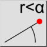
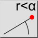
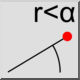
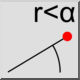

Położenie biegunowe
Pasek narzędziowy / ikona:
 

Menu: Informacja > Położenie biegunowe
Skrót: I, L
Polecenia: infopospol | il
Jest to tłumaczenie automatyczne.
Pasek narzędziowy / ikona:
 

Menu: Informacja > Położenie biegunowe
Skrót: I, L
Polecenia: infopospol | il
Narzędzie to wyprowadza absolutne współrzędne biegunowe wybranych punktów na rysunku.